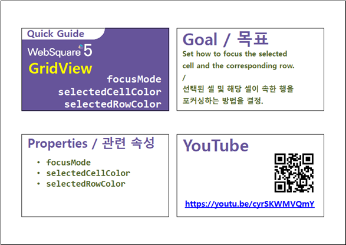

[GridView] 셀 선택 시 선택 범위 지정하기
1개요
GridView의 셀(Cell) 선택 시 선택 범위를 비교하는 예제입니다. 기본 설정은 셀(Cell) 단위이며, 설정을 통해 행(Row)단위, 셀(Cell)+행(Row) 단위, 아무 동작 안함으로 변경할 수 있습니다.
2구현된 기능
[기본설정] focusMode : cell
focusMode : row
focusMode : both
focusMode : none
3예제 테스트 방법
각 GridView의 셀을 선택(클릭)하고 선택된 범위를 비교합니다.
그림 1.[브라우저(Chrome) 실행 예시 - focusMode : cell]
그림 2.[브라우저(Chrome) 실행 예시 - focusMode : row]
그림 3.[브라우저(Chrome) 실행 예시 - focusMode : both]

그림 4.[브라우저(Chrome) 실행 예시 - focusMode : none]
4구현 예시
GridView와 연결된 DataList 생성 및 연결 방법은 생략되었습니다.
4.1Focus Mode 설정하기
GridView의 속성을 정의합니다.
[필수] focusMode="옵션 값" //[default: cell, row, both, none]
(옵션 값)
cell : (기본 값) 셀을 선택.
row : 행을 선택.
both : 셀과 행을 모두 선택.
none : 아무것도 선택하지 않음.
그림 5.웹스퀘어5 SP5 스튜디오의 Property View(속성창) 예시

<!-- gridView 의 소스 본문 예시 --> <w2:gridView focusMode="both" dataList="data:dlt_books"> <!-- 중략 --> </w2:gridView>
5주요 API
focusMode
6참고 문서
[웹스퀘어5 SP5 개발 가이드] GridView
링크 : https://docs1.inswave.com/sp5_user_guide/86bdcf48029b958b
[웹스퀘어5 SP5 개발 가이드] GridView 포커싱 (focusMode)
링크 : https://docs1.inswave.com/sp5_user_guide/86bdcf48029b958b#b5fb947588282de9
7참고 동영상
GridView 포커싱 (focusMode)
링크 : https://youtu.be/cyrSKWMVQmY
